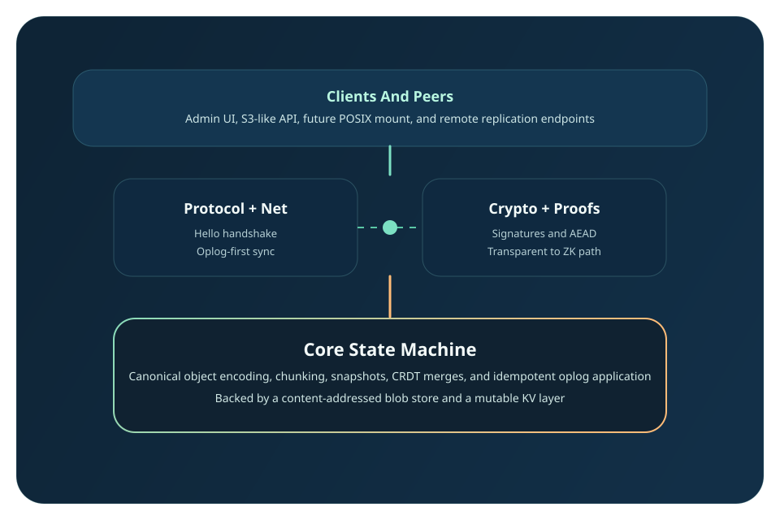

Operations, not diffs
A write records what the user meant — create this name in this directory — rather than the resulting bytes. Intent can be replayed in any order and still land in the same place; a diff cannot.
Verifiable offline-first storage
NexusFS represents every change as a signed operation rather than a state diff, so devices can write while disconnected and reconcile deterministically later. Content is addressed by hash, namespace state is a CRDT, and remote data is verified before it is trusted — not after.
Two nodes converge over QUIC with every operation and chunk verified before it is accepted, content is encrypted at rest without breaking that verification, operations carry signed evidence of what they changed, and replication adapts to the device's power and heat.
Design decisions
A write records what the user meant — create this name in this directory — rather than the resulting bytes. Intent can be replayed in any order and still land in the same place; a diff cannot.
A new inode's id is a hash of the operation that allocated it, so every replica names it identically without consulting a shared counter. Two offline devices creating the same path produce two distinct inodes, which is precisely the conflict the merge rules then resolve.
Concurrent writes to one name both survive. The lower dot keeps the plain name, the other gains a suffix derived from its author and timestamp — a value every replica computes the same way, so no round trip is needed to agree.
Signatures are checked before an operation can touch state, and chunk hashes are checked before content is stored. A peer cannot hand you bytes that do not match the hash you asked for.
An operation is a few hundred bytes; the content it names can be megabytes. So a device short on power keeps taking operations and defers the bytes. It still knows what exists, where, and at what version — and fetches any particular file once power returns. Falling behind on content is recoverable; falling behind on the namespace is not.
System Shape
NexusFS separates immutable content, mutable namespace state, transport, and optional facades. That keeps the local state machine deterministic while letting the replication layer and future proof systems evolve independently.

Build Surface
Research Tracks
Quick start
cargo build -p nexusfs
cp examples/nexusfs.toml ./nexusfs.toml
cargo run -p nexusfs -- mkdir --config ./nexusfs.toml /docs
echo "hello nexus" > /tmp/a.txt
cargo run -p nexusfs -- put --config ./nexusfs.toml /tmp/a.txt /docs/a.txt
cargo run -p nexusfs -- ls --config ./nexusfs.toml /docs
cargo run -p nexusfs -- cat --config ./nexusfs.toml /docs/a.txt
Every mutating command builds a signed operation and applies it through the
same pipeline replication will use, so the CLI is not a shortcut around the
state machine — it is a client of it. Run
nexusfs daemon for the admin console on
127.0.0.1:7070, which shows the head, state root, storage
accounting and recent operations.
Documentation
The repo now includes a dedicated `documentation/` folder for clean onboarding and a deeper internal `docs/` set for protocol and research detail.